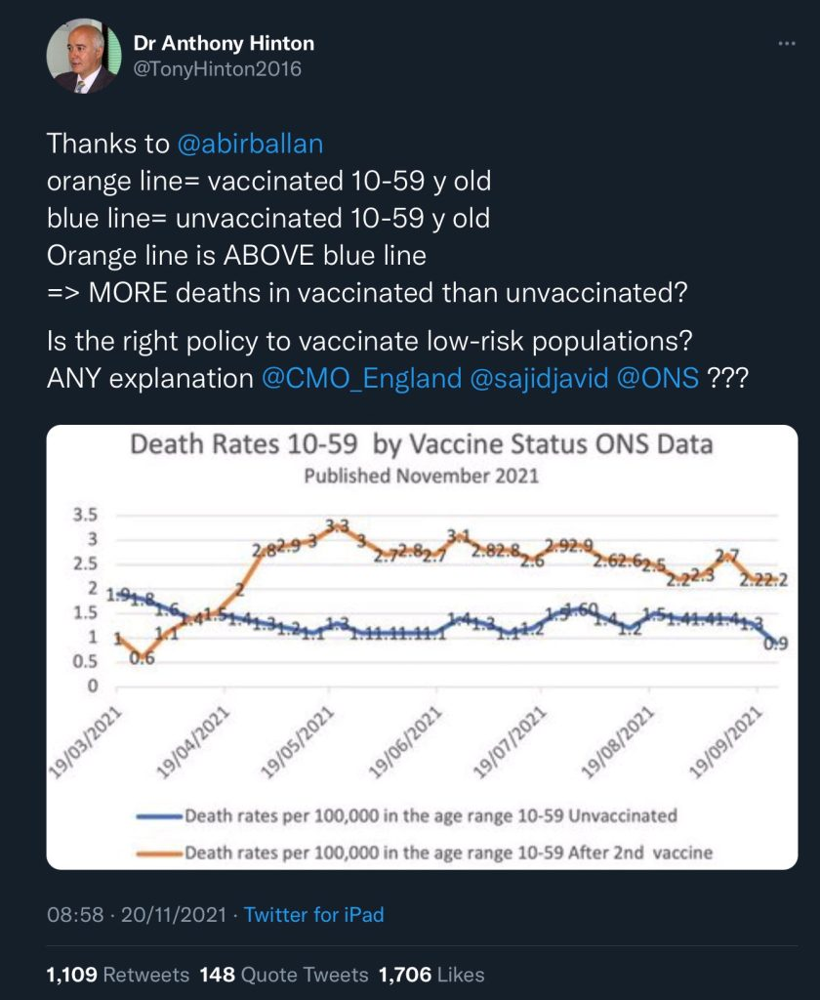
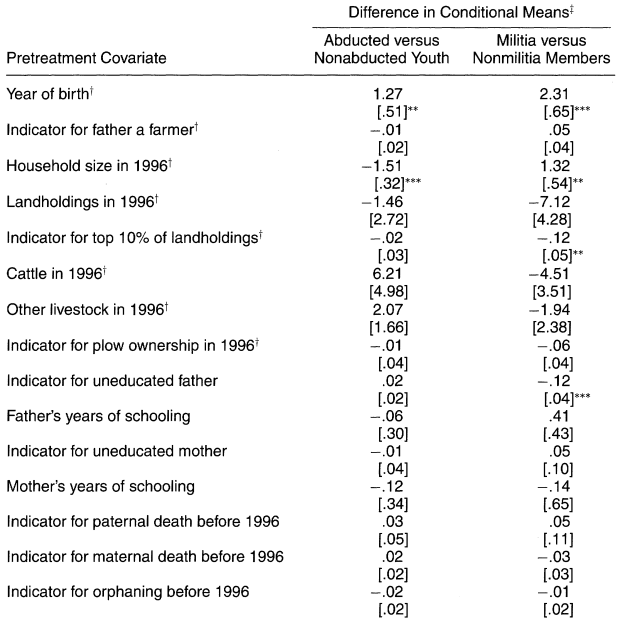
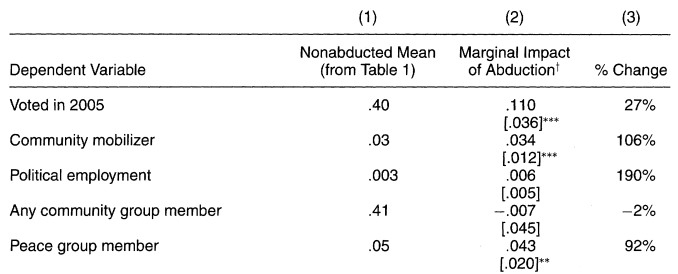
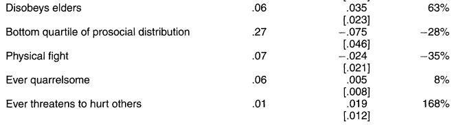
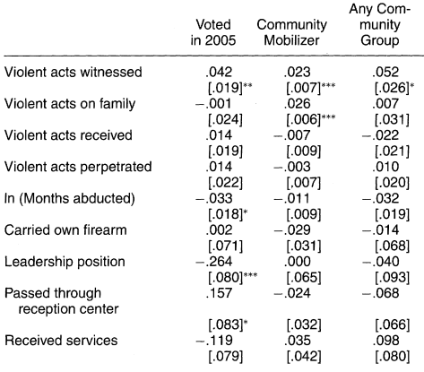

PSCI 2227: War and State Development
March 23, 2026
Blattman characterizes his study of former combatants in Uganda as a “natural experiment.” What makes his study analogous to an experiment?
Last week. Effects of war on democratization at the institutional level.
Today. War’s effect on democracy at the individual level.
Do former combatants participate in politics more or less than the general public?
How does combat experience affect a person’s degree of political participation?
We want to calculate the average causal effect — the difference between
Fundamental problem of causal inference: for each person, we only observe one of these two “potential outcomes”
| Person | Combat experience | %Vote if combatant | %Vote if not | Effect |
|---|---|---|---|---|
| Jimmy | No | ? | 70% | ? |
| Walter | No | ? | 80% | ? |
| Gus | Yes | 35% | ? | ? |
| Mike | Yes | 20% | ? | ? |
We want to calculate the average causal effect — the difference between
Fundamental problem of causal inference: for each person, we only observe one of these two “potential outcomes”
| Person | Combat experience | %Vote if combatant | %Vote if not | Effect |
|---|---|---|---|---|
| Jimmy | No | 90% | 70% | +20pp |
| Walter | No | 100% | 80% | +20pp |
| Gus | Yes | 35% | 15% | +20pp |
| Mike | Yes | 20% | 0% | +20pp |
We want to calculate the average causal effect — the difference between
Fundamental problem of causal inference: for each person, we only observe one of these two “potential outcomes”
| Person | Combat experience | %Vote if combatant | %Vote if not | Effect |
|---|---|---|---|---|
| Jimmy | No | 50% | 70% | −20pp |
| Walter | No | 60% | 80% | −20pp |
| Gus | Yes | 35% | 55% | −20pp |
| Mike | Yes | 20% | 40% | −20pp |
We want to calculate the average causal effect — the difference between
Fundamental problem of causal inference: for each person, we only observe one of these two “potential outcomes”
| Person | Combat experience | %Vote if combatant | %Vote if not | Effect |
|---|---|---|---|---|
| Jimmy | No | 70% | 70% | 0pp |
| Walter | No | 80% | 80% | 0pp |
| Gus | Yes | 35% | 35% | 0pp |
| Mike | Yes | 20% | 20% | 0pp |
“Treated” units may systematically differ from “untreated” ones
Hard to pin down where differences in outcomes come from
Easiest to think about problem in terms of confounding variables

High quality studies showed Covid vaccines highly effective at preventing death
Yet we’ve seen higher Covid death rates in vaccinated populations than in unvaccinated ones
How could this be?
Age is a major confounding variable — older people at much higher baseline risk, also much more likely to get vaccinated
Discussion question
When we’re trying to analyze the effect of being a combatant on political participation, what are some of the most important confounding variables?
Remember, these should be characteristics that —
One setting where correlation is a good estimate of the causal effect: randomized experiment
Called the “gold standard” of causal inference (though I don’t like that term since the gold standard is actually a poor way to run monetary policy)
Randomization is crucial to make the experiment “work”
Ideal is to have no baseline differences between treated and untreated
With large sample + true randomization, unlikely to have any systematic differences in characteristics — experiment isolates the causal effect
Treatment group: Men abducted by the LRA in northern Uganda
Control group: Men from same areas who weren’t abducted
Dependent variables: Social + political participation
Key assumption — no confounding: Abducted and non-abducted essentially similar in terms of background characteristics that would predict later political participation
Few observable differences b/w abducted and non-abducted
No obvious economic differences
Smaller differences than seen between participants and non-participants in voluntary government militia



Discernibly higher political participation + organization among abductees
Few differences in non-political community activity
Differences in anti-social activity are inconsistent and not statistically significant
What predicts more or less participation among abductees?
Only consistent predictor is extent of violence witnessed
Caution: These results aren’t “experimental”

Summing up what Blattman has shown:
Discussion question
What, if anything, does this study tell us about the link between violence and voting in other situations?
What would this study lead you to expect about Russian conscripts returning from Ukraine? Or about American bomber pilots serving in Iran?
Tuesday, 2:00–3:30. My office hours, Commons 326. Feel free to drop in!
Wednesday’s class. Starting unit on nationalism.